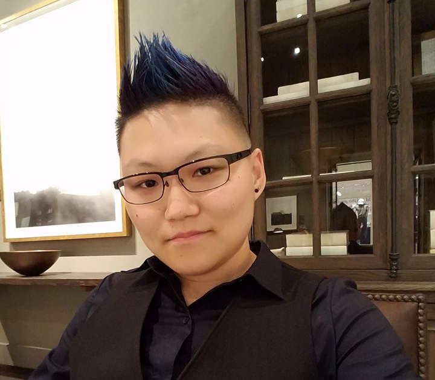

I am an individual whom many would say is passionate about a diverse array of subjects ranging from computer science, mathematics, art, interior design, architecture, martial arts, writing and mental health awareness.
I consider myself a creative developer - someone who merges aesthetically creative designs with solid programming work. I really combining the creativity of the arts, and the technicality of the sciences.

On the more artistic and creative side, from 2012-2016, I digitally inked comic pages and characters while supporting J.S. Skye LLC as a Managing Partner. Presently, I am continuing to work on improving my skills in calligraphy and drawing with ink.
Bow ties are cool. - The Eleventh Doctor
Informed by my background as a graduate in the linguistics field and my experience as a Lecturer while in Malaysia, I am always actively engaging and interacting with new people. I am not afraid to reach out to new contacts and make connections. I've been told that I have a strong personality and great interpersonal skills.
As a self-proclaimed geek-nerd, things like Stargate SG1
, Star Trek
. Star Wars
, Firefly
, Harry Potter
, and many other movies, books, games, and comics keep me sane on more mundane days.